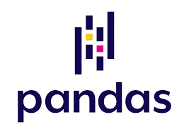
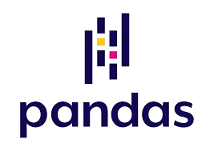

Compétences
-


Maîtrise avancée de Java, un langage de programmation orienté objet, j'ai aussi utiliser des frameworks populaire de Java comme Spring Boot. Spring Boot m'a permis de comprendre que le choix d'une technologie avait son importance dans un projet informatique car il s'agit d'un standart de la programmation back-end extremement efficace.
-
 

Ressources basiques en Python, ma dernière utilisation remonte au lycée mais mes connaissances en programmation orientée objet me permettent d'en faire usage. En 3ème année, j'ai réalisé diverses tâches de modélisations mathématiques à l'aide ddde la bibliothèque Pandas, j'ai ainsi appris à nettoyer et analyser des echantillons de données pour tirer des conclusions stratégiques.
-


Expérience pratique avec SQL, je l'ai utilisé pour la gestion de bases de données relationnelles, j'ai également utiliser JDBC pour le requêtage en java. J'ai également manipulé des bases dites NoSQL comme MongoDB qui m'a permit de comprendre les principes de bases de données orientés documents et leur impact sur un très gros volume de données
-


J'ai appris récemment à dynamiser des sites via JavaScript, un langage de programmation que j'ai retrouvé dans l'utilisation de la bibliotheque React avec laquelle je fais des interfaces front-end. j'ai ainsi appris au cours de divers projets faire communiquer des interfaces visuelles avec un serveur API en back-end (à l'aide de Spring Boot ou encore de NestJS)
-

Maîtrise d'HTML, je l'ai utilisé pour le développement de site web statique avec une décoration CSS. J'ai également appris à les intégrer dans des JSP (Java Server Page) lors de mes projets de Spring Boot.
-

Compétence en C#, un langage de programmation que j'ai utilisé pour programmer sur le moteur de jeu 3D Unity dans le cadre de mes projets personnels.